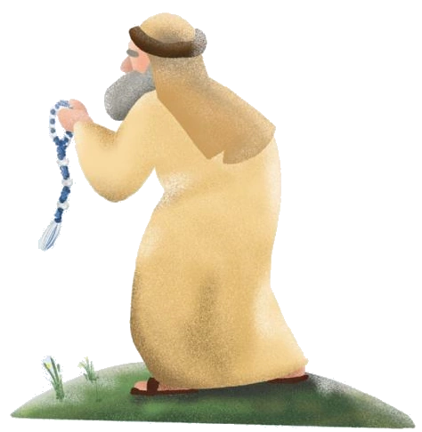

後記

「又有新的人跑來庇護城啦！」
「聽說他跟追殺他的人是前後腳到達城門口！」
「快點，我們去看看！」
每當有人想要逃進庇護城時，城內的百姓便會群起圍觀，看著長老審問來到這裡渴望庇護的人，跟著大家一起討論那人是不是誤殺人者，可以進入耶和華親自設立的庇護城，尋求上帝的幫助。
人群中有一位老者，看著站在城牆下不安的少年，難以置信瞪大了雙眼，緊接著轉身走出人群，快步走進他平時工作的莊園內。
莊園的主人仔細聽著面前老者說的每一句話。對方是在自己莊園內工作了好幾年的老長工，平時總是任勞任怨做好自己下達的每一個任務。
沒有人知道這位老長工有著什麼樣的過往，為什麼來到希伯崙，也沒人知道那天他跟莊園的主人講了些什麼。只是當兵丁簇擁著以利雅薩進到希伯崙後，莊園的主人便主動走向他，帶著以利雅薩認識希伯崙的環境，尋找可以居住的安所。
這天，老長工完成自己的工作後，看著眼前的青年踏著輕快的步伐，在莊園內忙碌著自己的工作。
以利雅薩雖然身著一件破舊的棉衣，但全身卻打扮得乾乾淨淨的，臉上蕩漾的笑容，與身旁的其他工人相比，顯得格格不入。衣襬處懸掛著的繸子，隨著以利雅薩走路的步伐不斷晃動。若是仔細觀察繸子，便可看出它的與眾不同，上端獨特的結紮，與以利雅薩一樣獨特。
老長工坐在樹蔭底下休息，感受到以利雅薩打從內心發出的喜悅，老長工的心情似乎也被感染，嘴角不自覺的上揚。
他從懷中拿出一件陳舊的繸子，泛黃的羊毛線，好似在昭示著自己與主人一樣，經歷過許多風塵。
老長工低頭看著手中的繸子，龐大的結紮與短小的流蘇，彷彿在抗議編織者不純熟的手法。他輕輕地用手指梳理著流蘇，欣慰的笑了笑：「你知道嗎，你名字的意思是神已經幫助。」